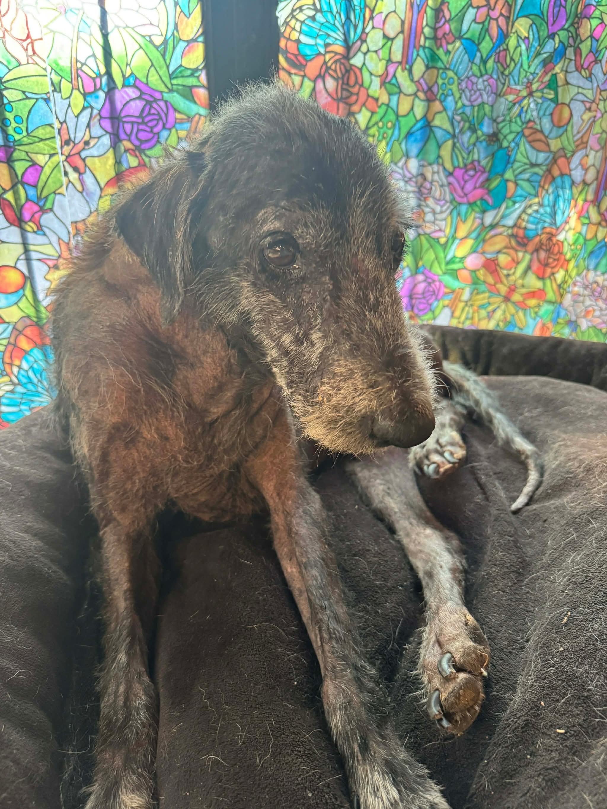
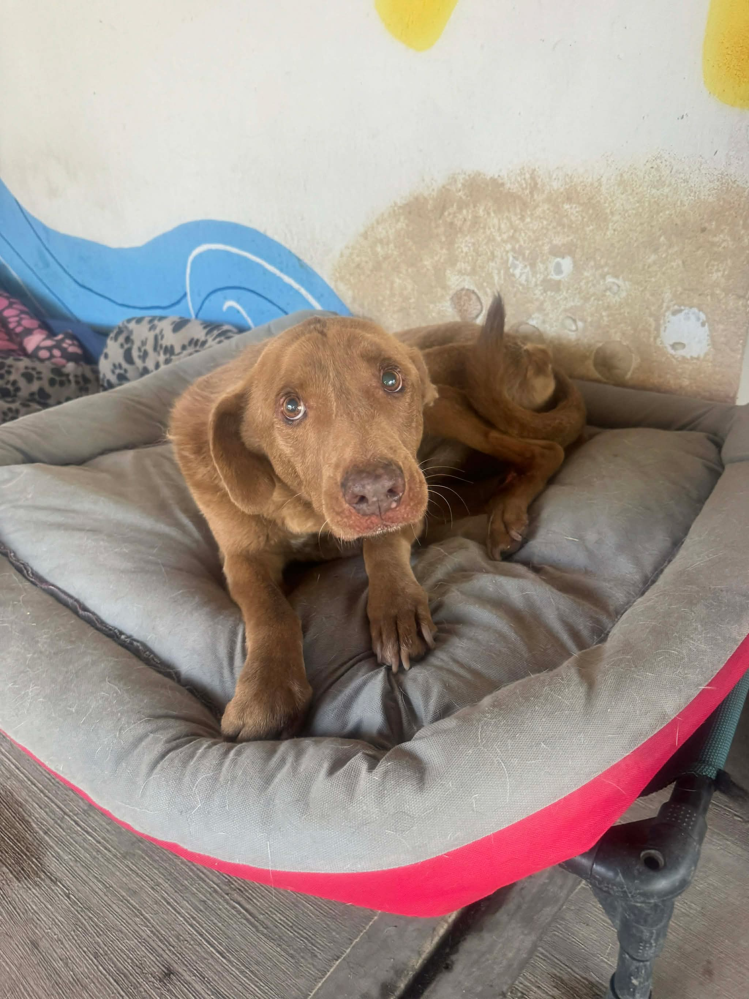
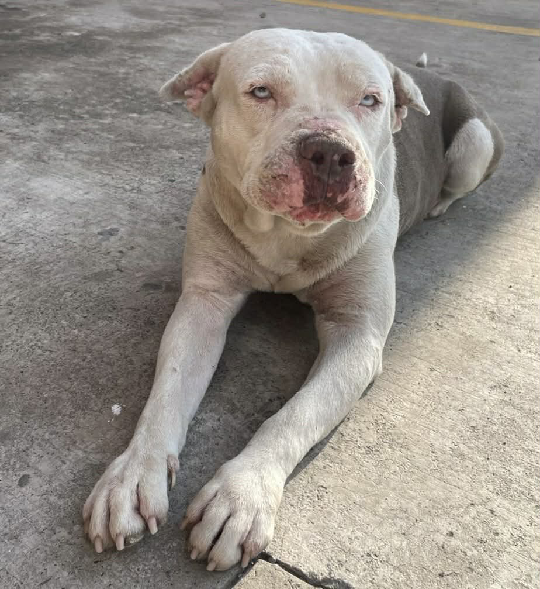
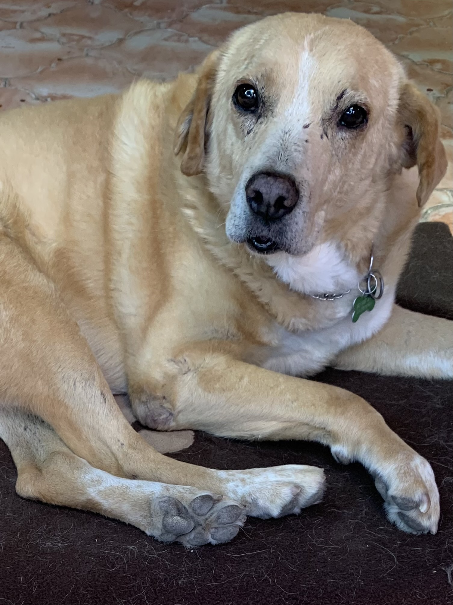

Teddy
Teddy was found wandering alone, a 10 year old senior stray dog in pain. He had been living in a small Mexican village with no one to notice or care for him. He was discovered by a young couple who chose to notice him and bring him to the attention of Tail End Sanctuary. Teddy has been diagnosed with Cancer. He is receiving medical attention and loving care, never alone again to fend for himself.
Sponsor TeddyPugsley
Once upon a time, Pugsley lived in a house on a hill. He was the prince of his realm. Then tragedy struck, his mama died, and he was placed in another home. We have no information as to his life since then until he was found blind and wandering in the middle of a street in a local village. Now he is safe.
Sponsor Pugsley
Valentino
Valentino was found wandering in the middle of a highway beside himself with fear. A kind person opened her passenger door and he jumped in. We expected that he would be an easy dog to place in a home. Then he was diagnosed with cancer. He is being treated and is expected to make a full recovery. Had he not hopped in that car he would surely have died a slow and agonizing death.
Sponsor Valentino
Coffee
Coffee arrived timid and uncertain, but quickly found her place. Now she greets every morning with a gentle wag and a trust she never had before.
Help Dogs Like Coffee
Benito
Benito lived with a homeless person until that person disappeared. He was in terrible condition when rescued but has been nursed back to health. This little pittie has proven that you can teach an old dog new tricks. He has learned to be quite a snuggler and likes nothing better than curling up next to you on the couch.
Sponsor Benito
Chester
Chester was found on the street at age 10 with a severe skin condition and a defeated spirit. With his scarred face, torn ear, and missing front teeth, he likely had a life as a bait dog used to train fighting dogs. He was fearful and resisted being caught. Several Mexican boys were offered some pesos to find him and bring him to the rescuer. They were successful and from then on Chester had a life filled with care and love. He had a life of extremes, first with fear and aggression, then with love and compassion.
Sponsor Chester